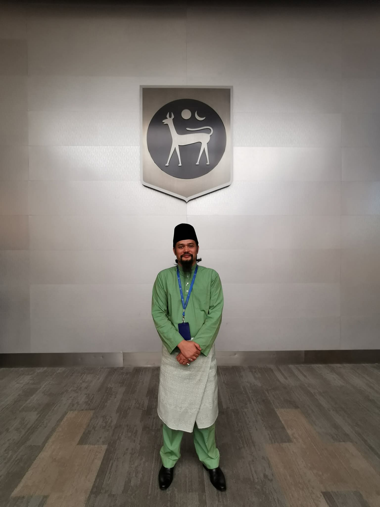
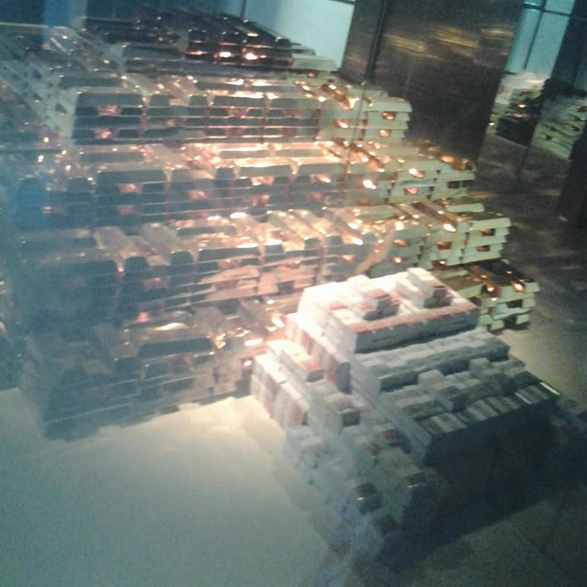

Welcome
👋 Hi there! I'm Mohd Yusni Bin Mohd Musa. By day, I work as an
auditor at Central Bank of Malaysia, ensuring precision and integrity in financial systems.
By night, I dive into my true passion MUSIC. Think of this space as a blend of two worlds:
- Audit & Accuracy 🧾 — my professional life at the Central Bank of Malaysia.
- Passion & Melody 🎸 — my love for music that keeps me inspired.
Photo Highlights

